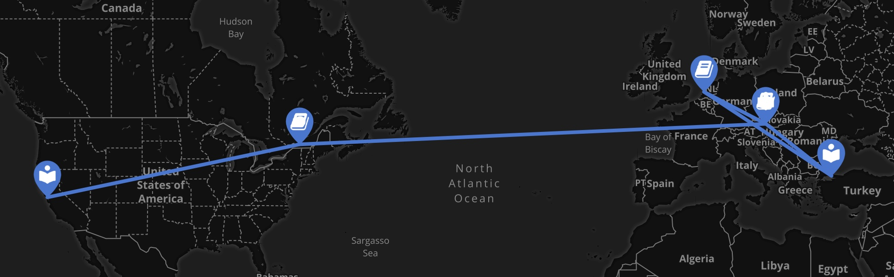
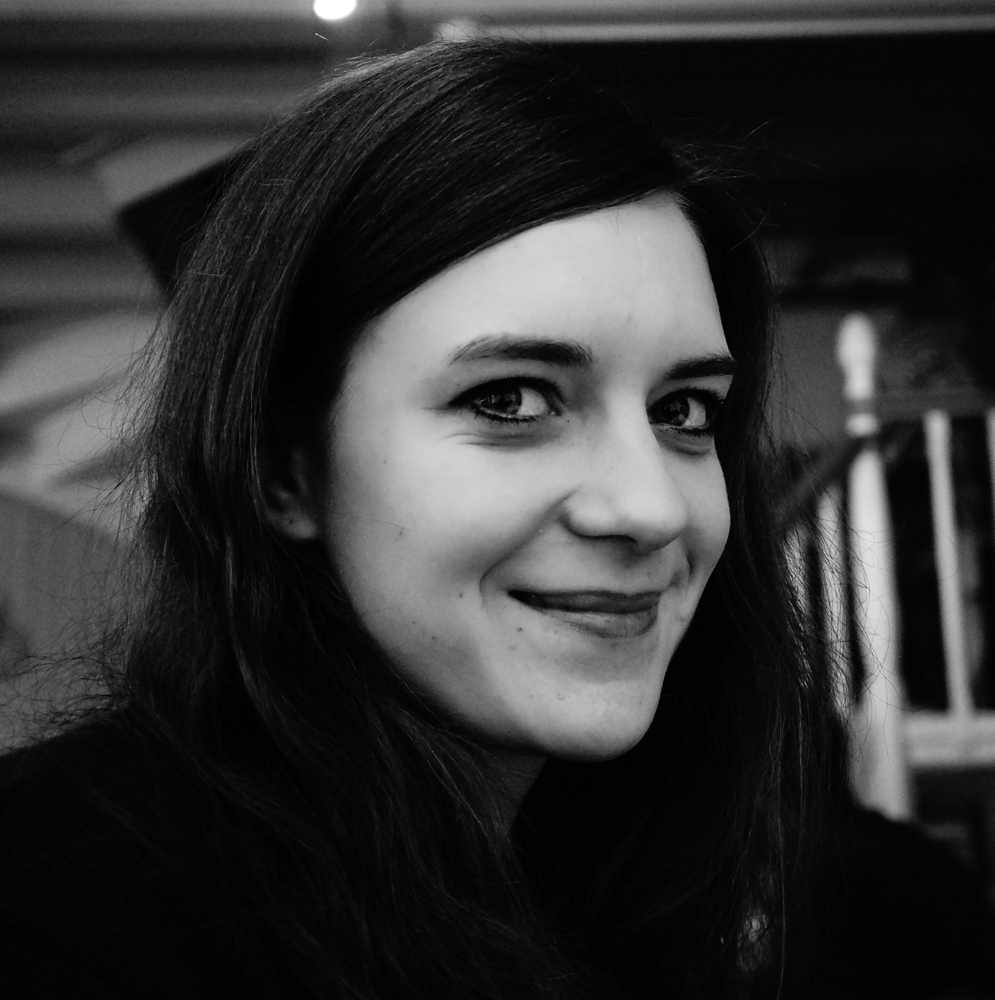

 Click here to follow my academic path on Maphub
Even though now my research is in the digital humanities, I have a Bachelor’s degree in Middle Eastern Studies from the University of Vienna. For my BA specialized in Turkish language and literature and also took courses at Bogazici and Istanbul University. During my Master’s degree, which I did at Leiden University, I focused my research on urbanization and its literary representation in Turkish fiction.
 In 2015 I started a PhD at McGill University with Andrew Piper as my supervisor, as a NovelTM fellow, assistant editor of Cultural Analytics, and lab member at txtlab. I increasingly got interested in translation trajectories and their geographic mapping, as a result of which I finished my thesis “Mapping German Fiction in Translation in the German National Library Catalogue (1980-2020)” in December 2022.
Between April 2023 and July 2025 I was a postdoctoral fellow at the Centre de recherche interuniversitaire sur les humanités numériques (CRIHN), Université de Montréal, where I worked on improving the FAIRness of the Cultural Crosscurrents Catalogue (https://www.crosscurrentscatalogue.ca/) as well as my research project on mapping women writers in translation.
Since August 2025 I am a postdoctoral fellow at the Research Group Visualization and Data Analysis at the University of Vienna and scientific coordinator for Research Network Data Science @ Uni Vienna. My current projects aim at visualizing the transfer of translations in the Germanophone author communities and their (under)representation in national libraries. As a digital humanist, German and Turkish studies scholar, I am dedicated to developing tools and datasets for quantitative translation studies and cross-cultural analysis of textual and bibliographical data by using Geographic Information System (GIS), social network analysis, machine learning, and creating web applications for bibliographic data exploration.